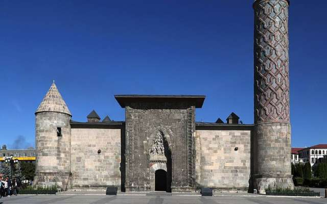

Nach Manzikert in Anatolien ansässig geworden, machten die Türken Konya zur Hauptstadt und schufen eine neue Kultur der Karawansereien, Medresen und Fliesenkunst.
Der Sieg Sultan Alp Arslans über den byzantinischen Kaiser Romanos Diogenes bei Manzikert (Malazgirt) 1071 gilt als Wendepunkt der türkischen Besiedlung Anatoliens. Das anatolische Seldschukenreich mit der Hauptstadt Konya erlebte im 12.–13. Jh. eine Blütezeit. Die an den Handelswegen errichteten Karawansereien zeigen, welchen Wert der Staat auf Handel und Reisende legte.
Die Fliesen der Karatay-Medrese und das Mevlana-Museum in Konya sind Sinnbilder seldschukischer Kunst und der Sufi-Tradition; die Gedanken Mevlana Dschalaluddin Rumis aus dem 13. Jh. werden heute weltweit gelesen. Der Seldschukenfriedhof von Ahlat mit seinen verzierten Grabsteinen ist ein einzigartiges Freilichtmuseum, die Burg von Alanya spiegelt die Macht der Seldschuken am Mittelmeer. Große Moschee und Hospital von Divriği (Sivas) sind seit 1985 UNESCO-Welterbe.
Mit dem Zerfall des Seldschukenreichs begann die Zeit der anatolischen Beyliks. Das Kütahya der Germiyaniden mit seiner Fliesenkunst und das unter den Artukiden aufblühende Hasankeyf am Tigris stehen für diese Zeit. Der Komplex von Hacıbektaş zeigt die Vielfalt der religiösen Welt Anatoliens.
Wo Sie diese Epoche erleben
 Mevlana MüzesiKonya
Mevlana MüzesiKonya Karatay (Çini Eserler) MüzesiKonya
Karatay (Çini Eserler) MüzesiKonya Konya Arkeoloji MüzesiKonya
Konya Arkeoloji MüzesiKonya Alanya KalesiAntalya
Alanya KalesiAntalya Ahlat Selçuklu MezarlığıBitlis
Ahlat Selçuklu MezarlığıBitlis Ahlat MüzesiBitlis
Ahlat MüzesiBitlis
Türk İslam Eserleri ve Etnografya MüzesiErzurum Erzurum KalesiErzurum
Erzurum KalesiErzurum Türk ve İslam Eserleri Müzesiİstanbul
Türk ve İslam Eserleri Müzesiİstanbul Etnografya MüzesiAnkara
Etnografya MüzesiAnkara Hacıbektaş MüzesiNevşehir
Hacıbektaş MüzesiNevşehir Hasankeyf Müzesi ve ÖrenyeriBatman
Hasankeyf Müzesi ve ÖrenyeriBatman Çini MüzesiKütahya
Çini MüzesiKütahya🎓 Testen Sie sich
1. In welchem Jahr fand die Schlacht von Manzikert statt?
2. Was war die Hauptstadt der anatolischen Seldschuken?
3. Welche Medrese in Konya ist für ihre Fliesen berühmt?
4. In welchem Bezirk liegt der für verzierte Grabsteine berühmte Seldschukenfriedhof?